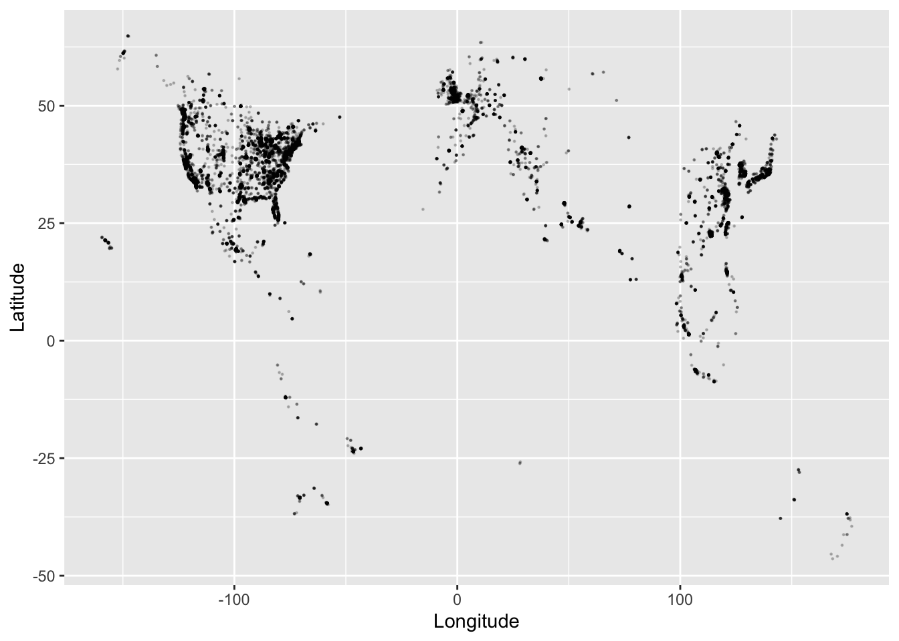

# Just a plotting frameleaflet(data = fave_places)
# Now what do we have?# A frame with a mapleaflet(data = fave_places) |>addTiles()
# Now what do we have?# longitude and latitude refer to the variables in our data# We now have a map with points plotted based on longitude & latitude.leaflet(data = fave_places) |>addTiles() |>addMarkers(lng =~longitude, lat =~latitude)
# Since we named them "longitude" and "latitude", the function# automatically recognizes these variables. No need to write them!leaflet(data = fave_places) |>addTiles() |>addMarkers()
10.1.0.2 Part b
10.1.0.2.1 PLAY AROUND! This map is interactive. Zoom in on one location. Keep zooming – what level of detail can you get into? How does that detail depend upon where you try to zoom in (thus what are the limitations of this tool)?
The zooming is limited to geographical contours.
10.2 Exercise 2
# Load package needed to change colorlibrary(gplots)
Attaching package: 'gplots'
The following object is masked from 'package:stats':
lowess
# We can add colored circles instead of markers at each locationleaflet(data = fave_places) |>addTiles() |>addCircles(color ="red")
# We can change the background# Mark locations with yellow dots# And connect the dots, in their order in the dataset, with green lines# (These green lines don't mean anything here, but would if this were somebody's travel path!)leaflet(data = fave_places) |>addProviderTiles("USGS") |>addCircles(weight =10, opacity =1, color ="yellow") |>addPolylines(lng =~longitude,lat =~latitude,color ="green")
Assuming "Longitude" and "Latitude" are longitude and latitude, respectively
10.3.1.1 Part b
10.3.1.1.1 Let’s start with the ggplot() tools we already know. Construct a scatterplot of all starbucks locations, not just those in Minnesota, with:
Latitude and Longitude coordinates (which goes on the y-axis?!) Make the points transparent (alpha = 0.2) and smaller (size = 0.2)
ggplot(starbucks, aes( x = Longitude, y = Latitude)) +geom_point( alpha =0.2, size =0.2)
Warning: Removed 1 row containing missing values or values outside the scale range
(`geom_point()`).

10.4 Exercise 4
10.4.0.1 Part a
# Load the packagelibrary(rnaturalearth)# Get info about country boundaries across the world# in a "sf" or simple feature formatworld_boundaries <-ne_countries(returnclass ="sf")
10.4.0.2 Part b
# What does this code produce?# What geom are we using for the point map?ggplot(world_boundaries) +geom_sf()
# Load package needed to change map themelibrary(mosaic)
Registered S3 method overwritten by 'mosaic':
method from
fortify.SpatialPolygonsDataFrame ggplot2
The 'mosaic' package masks several functions from core packages in order to add
additional features. The original behavior of these functions should not be affected by this.
Attaching package: 'mosaic'
The following object is masked from 'package:Matrix':
mean
The following objects are masked from 'package:dplyr':
count, do, tally
The following object is masked from 'package:purrr':
cross
The following object is masked from 'package:ggplot2':
stat
The following objects are masked from 'package:stats':
binom.test, cor, cor.test, cov, fivenum, IQR, median, prop.test,
quantile, sd, t.test, var
The following objects are masked from 'package:base':
max, mean, min, prod, range, sample, sum
# Add a point for each Starbucks# NOTE: The Starbucks info is in our starbucks data, not world_boundaries# How does this change how we use geom_point?!ggplot(world_boundaries) +geom_sf() +geom_point(data = starbucks,aes(x = Longitude, y = Latitude),alpha =0.3, size =0.2, color ="darkgreen" ) +theme_map()
Warning: Removed 1 row containing missing values or values outside the scale range
(`geom_point()`).
10.4.1 Part c
10.4.1.0.1 Summarize what you learned about Starbucks from this map.
Starbucks is a multinational franchise that is concentrated in the US, South America and East Asia.
There are some branches in South America, Australia and Africa but not many of them.
10.5 Exercise 5
10.5.0.1 Part a
Data on Starbucks for only Canada, Mexico, and the US, labeled as “CA”, “MX”, “US” in the starbucks data.
# We'll learn this syntax soon! Don't worry about it now.starbucks_cma <- starbucks |>filter(Country %in%c('CA', 'MX', 'US'))
cma_boundaries <-ne_states(country =c("canada", "mexico", "united states of america"),returnclass ="sf")
10.5.0.2 Part b
10.5.0.2.1 Make the map
# Just the boundariesggplot(cma_boundaries) +geom_sf()
# Add the points# And zoom inggplot(cma_boundaries) +geom_sf() +geom_point(data = starbucks_cma,aes(x = Longitude, y = Latitude),alpha =0.3,size =0.2,color ="darkgreen" ) +coord_sf(xlim =c(-179.14, -50)) +theme_map()
# Load packageslibrary(sf)library(maps)# Get the boundariesmidwest_boundaries <-st_as_sf( maps::map("county",region =c("minnesota", "wisconsin", "north dakota", "south dakota"), fill =TRUE, plot =FALSE))# Check it outhead(midwest_boundaries)
Simple feature collection with 6 features and 1 field
Geometry type: MULTIPOLYGON
Dimension: XY
Bounding box: xmin: -96.81268 ymin: 45.05167 xmax: -93.01397 ymax: 48.53526
Geodetic CRS: +proj=longlat +ellps=clrk66 +no_defs +type=crs
ID geom
minnesota,aitkin minnesota,aitkin MULTIPOLYGON (((-93.03689 4...
minnesota,anoka minnesota,anoka MULTIPOLYGON (((-93.51817 4...
minnesota,becker minnesota,becker MULTIPOLYGON (((-95.14537 4...
minnesota,beltrami minnesota,beltrami MULTIPOLYGON (((-95.58655 4...
minnesota,benton minnesota,benton MULTIPOLYGON (((-93.77027 4...
minnesota,big stone minnesota,big stone MULTIPOLYGON (((-96.10794 4...
10.6.0.2 Part b
ggplot(midwest_boundaries) +geom_sf() +geom_point(data = starbucks_midwest,aes(x = Longitude, y = Latitude),alpha =0.7,size =0.2, color ='darkgreen' ) +theme_map()
10.7 Exercise 7
10.7.0.1 Part a
# Point map (we made this earlier)ggplot(cma_boundaries) +geom_sf() +geom_point(data = starbucks_cma,aes(x = Longitude, y = Latitude),alpha =0.3,size =0.2,color ="darkgreen" ) +coord_sf(xlim =c(-179.14, -50), ylim =c(14.54, 83.11)) +theme_map()
10.7.0.2 Part b
# What changed in the plot?# What changed in our code?!ggplot(cma_boundaries) +geom_sf() +geom_density_2d(data = starbucks_cma,aes(x = Longitude, y = Latitude),size =0.2,color ="darkgreen" ) +coord_sf(xlim =c(-179.14, -50), ylim =c(14.54, 83.11)) +theme_map()
Warning: Using `size` aesthetic for lines was deprecated in ggplot2 3.4.0.
ℹ Please use `linewidth` instead.
# Get the latitude and longitude coordinates of state boundariesstates_map <-map_data("state")# Check it outhead(states_map)
long lat group order region subregion
1 -87.46201 30.38968 1 1 alabama <NA>
2 -87.48493 30.37249 1 2 alabama <NA>
3 -87.52503 30.37249 1 3 alabama <NA>
4 -87.53076 30.33239 1 4 alabama <NA>
5 -87.57087 30.32665 1 5 alabama <NA>
6 -87.58806 30.32665 1 6 alabama <NA>
head(elections_by_state)
state_name state_abbr repub_pct_20 repub_20_categories
1 alabama AL 62.03 60-64
2 arkansas AR 62.40 60-64
3 arizona AZ 49.06 45-49
4 california CA 34.33 30-34
5 colorado CO 41.90 40-44
6 connecticut CT 39.21 35-39
10.8.0.2 Part b
# Note where the dataset, elections_by_state, is used# Note where the background map, states_map, is usedggplot(elections_by_state, aes(map_id = state_name, fill = repub_pct_20)) +geom_map(map = states_map) +expand_limits(x = states_map$long, y = states_map$lat) +theme_map()
# Make it nicer!ggplot(elections_by_state, aes(map_id = state_name, fill = repub_pct_20)) +geom_map(map = states_map) +expand_limits(x = states_map$long, y = states_map$lat) +theme_map() +scale_fill_gradientn(name ="% Republican", colors =c("blue", "purple", "red"), values = scales::rescale(seq(0, 100, by =5)))
ggplot(elections_by_state, aes(map_id = state_name, fill = repub_20_categories)) +geom_map(map = states_map) +expand_limits(x = states_map$long, y = states_map$lat) +theme_map()
# Load package needed for refining color palettelibrary(RColorBrewer)# Now fix the colorsggplot(elections_by_state, aes(map_id = state_name, fill = repub_20_categories)) +geom_map(map = states_map) +expand_limits(x = states_map$long, y = states_map$lat) +theme_map() +scale_fill_manual(values =rev(brewer.pal(8, "RdBu")), name ="% Republican")
10.8.0.3 Part c
# Get only the starbucks data from the USstarbucks_us <- starbucks |>filter(Country =="US")# Map itggplot(elections_by_state, aes(map_id = state_name, fill = repub_20_categories)) +geom_map(map = states_map) +geom_point(data = starbucks_us,aes(x = Longitude, y = Latitude),size =0.05,alpha =0.2,inherit.aes =FALSE ) +expand_limits(x = states_map$long, y = states_map$lat) +theme_map() +scale_fill_manual(values =rev(brewer.pal(8, "RdBu")), name ="% Republican")
10.8.0.4 Part d
10.8.0.4.0.1 We used geom_sf() for point maps. What geom do we use for choropleth maps?
geom_sf()
geom_polygon
10.9 Exercise 9
10.9.0.1 Part a
# Get the latitude and longitude coordinates of county boundarieslibrary(socviz)data(county_map) # Check it outhead(county_map)
state_name state_abbr county_name county_fips repub_pct_20 median_age
1 Alabama AL Autauga County 1001 71.44 37.5
2 Alabama AL Baldwin County 1003 76.17 41.5
3 Alabama AL Barbour County 1005 53.45 38.3
4 Alabama AL Bibb County 1007 78.43 39.4
5 Alabama AL Blount County 1009 89.57 39.6
6 Alabama AL Bullock County 1011 24.84 39.6
median_rent repub_20_categories
1 668 70-79
2 693 70-79
3 382 50-59
4 351 70-79
5 403 80-89
6 276 20-29
# Add 0's at the beginning of any fips_code that's fewer than 5 numbers long# Don't worry about the syntaxelections_by_counties <- elections_by_counties |>mutate(county_fips =as.character(county_fips)) |>mutate(county_fips =ifelse(nchar(county_fips) ==4, paste0("0", county_fips), county_fips))
10.9.0.2 Part b
10.9.0.2.0.1 Now map Republican support by county. Let’s go straight to the discretized repub_20_categories variable, and a good color scale.
ggplot(elections_by_counties, aes(map_id = county_fips, fill = repub_20_categories)) +geom_map(map = county_map) +scale_fill_manual(values =rev(brewer.pal(10, "RdBu")), name ="% Republican") +expand_limits(x = county_map$long, y = county_map$lat) +theme_map() +theme(legend.position ="right") +coord_equal()
Source Code
---title: "Spatial Viz"---Use this file for practice with the **spatial viz** in-class activity.Refer to the class website for details.## Exercise 1```{r}fave_places <-read.csv("https://hash-mac.github.io/stat112site-s25/data/our_fave_places.csv")# Check it outhead(fave_places)```#### Part a```{r}# Load the leaflet packagelibrary(leaflet)library(tidyverse)library(ggplot2)library(sf)library(maps)library(socviz)library(RColorBrewer)library(devtools)# Just a plotting frameleaflet(data = fave_places)``````{r}# Now what do we have?# A frame with a mapleaflet(data = fave_places) |>addTiles()``````{r}# Now what do we have?# longitude and latitude refer to the variables in our data# We now have a map with points plotted based on longitude & latitude.leaflet(data = fave_places) |>addTiles() |>addMarkers(lng =~longitude, lat =~latitude)``````{r}# Since we named them "longitude" and "latitude", the function# automatically recognizes these variables. No need to write them!leaflet(data = fave_places) |>addTiles() |>addMarkers()```#### Part b##### PLAY AROUND! This map is interactive. Zoom in on one location. Keep zooming – what level of detail can you get into? How does that detail depend upon where you try to zoom in (thus what are the limitations of this tool)?- The zooming is limited to geographical contours.## Exercise 2```{r}# Load package needed to change colorlibrary(gplots)# We can add colored circles instead of markers at each locationleaflet(data = fave_places) |>addTiles() |>addCircles(color ="red")``````{r}# We can change the background# Mark locations with yellow dots# And connect the dots, in their order in the dataset, with green lines# (These green lines don't mean anything here, but would if this were somebody's travel path!)leaflet(data = fave_places) |>addProviderTiles("USGS") |>addCircles(weight =10, opacity =1, color ="yellow") |>addPolylines(lng =~longitude,lat =~latitude,color ="green")```## Exercise 3### Part a```{r}# Import starbucks location datastarbucks <-read.csv("https://mac-stat.github.io/data/starbucks.csv")``````{r}# Don't worry about the syntaxstarbucks_mn <- starbucks |>filter(Country =="US", State.Province =="MN")```##### Create a leaflet map of the Starbucks locations in Minnesota. Keep it simple – go back to Exercise 1 for an example.```{r}leaflet(data = starbucks_mn) |>addTiles() |>addCircles(color =col2hex("blue"))```#### Part b##### Let’s start with the ggplot() tools we already know. Construct a scatterplot of all starbucks locations, not just those in Minnesota, with:Latitude and Longitude coordinates (which goes on the y-axis?!) Make the points transparent (alpha = 0.2) and smaller (size = 0.2)```{r}ggplot(starbucks, aes( x = Longitude, y = Latitude)) +geom_point( alpha =0.2, size =0.2)```## Exercise 4#### Part a```{r}# Load the packagelibrary(rnaturalearth)# Get info about country boundaries across the world# in a "sf" or simple feature formatworld_boundaries <-ne_countries(returnclass ="sf")```#### Part b```{r}# What does this code produce?# What geom are we using for the point map?ggplot(world_boundaries) +geom_sf()``````{r}# Load package needed to change map themelibrary(mosaic)# Add a point for each Starbucks# NOTE: The Starbucks info is in our starbucks data, not world_boundaries# How does this change how we use geom_point?!ggplot(world_boundaries) +geom_sf() +geom_point(data = starbucks,aes(x = Longitude, y = Latitude),alpha =0.3, size =0.2, color ="darkgreen" ) +theme_map()```### Part c##### Summarize what you learned about Starbucks from this map.- Starbucks is a multinational franchise that is concentrated in the US, South America and East Asia.- There are some branches in South America, Australia and Africa but not many of them.## Exercise 5#### Part aData on Starbucks for only Canada, Mexico, and the US, labeled as “CA”, “MX”, “US” in the starbucks data.```{r}# We'll learn this syntax soon! Don't worry about it now.starbucks_cma <- starbucks |>filter(Country %in%c('CA', 'MX', 'US'))``````{r}cma_boundaries <-ne_states(country =c("canada", "mexico", "united states of america"),returnclass ="sf")```#### Part b##### Make the map```{r}# Just the boundariesggplot(cma_boundaries) +geom_sf()``````{r}# Add the points# And zoom inggplot(cma_boundaries) +geom_sf() +geom_point(data = starbucks_cma,aes(x = Longitude, y = Latitude),alpha =0.3,size =0.2,color ="darkgreen" ) +coord_sf(xlim =c(-179.14, -50)) +theme_map()```## Exercise 6#### Part a```{r}starbucks_midwest <- starbucks |>filter(State.Province %in%c("MN", "ND", "SD", "WI"))``````{r}# Load packageslibrary(sf)library(maps)# Get the boundariesmidwest_boundaries <-st_as_sf( maps::map("county",region =c("minnesota", "wisconsin", "north dakota", "south dakota"), fill =TRUE, plot =FALSE))# Check it outhead(midwest_boundaries)```#### Part b```{r}ggplot(midwest_boundaries) +geom_sf() +geom_point(data = starbucks_midwest,aes(x = Longitude, y = Latitude),alpha =0.7,size =0.2, color ='darkgreen' ) +theme_map()```## Exercise 7#### Part a```{r}# Point map (we made this earlier)ggplot(cma_boundaries) +geom_sf() +geom_point(data = starbucks_cma,aes(x = Longitude, y = Latitude),alpha =0.3,size =0.2,color ="darkgreen" ) +coord_sf(xlim =c(-179.14, -50), ylim =c(14.54, 83.11)) +theme_map()```#### Part b```{r}# What changed in the plot?# What changed in our code?!ggplot(cma_boundaries) +geom_sf() +geom_density_2d(data = starbucks_cma,aes(x = Longitude, y = Latitude),size =0.2,color ="darkgreen" ) +coord_sf(xlim =c(-179.14, -50), ylim =c(14.54, 83.11)) +theme_map()```#### Part c```{r}elections_by_state <-read.csv("https://mac-stat.github.io/data/election_2020_by_state.csv")elections_by_counties <-read.csv("https://mac-stat.github.io/data/election_2020_county.csv")``````{r}# Don't worry about the code!elections_by_state <- elections_by_state |>filter(state_abbr !="DC") |>select(state_name, state_abbr, repub_pct_20) |>mutate(repub_20_categories =cut(repub_pct_20, breaks =seq(30, 70, by =5), labels =c("30-34", "35-39", "40-44", "45-49","50-54", "55-59", "60-64", "65-70"), include.lowest =TRUE))elections_by_counties <- elections_by_counties |>select(state_name, state_abbr, county_name, county_fips, repub_pct_20, median_age, median_rent) |>mutate(repub_20_categories =cut(repub_pct_20, breaks =seq(0, 100, by =10),labels =c("0-9", "10-19", "20-29", "30-39", "40-49","50-59", "60-69", "70-79", "80-89", "90-100"),include.lowest =TRUE))```## Exercise 8#### Part a```{r}# Get the latitude and longitude coordinates of state boundariesstates_map <-map_data("state")# Check it outhead(states_map)head(elections_by_state) ```#### Part b```{r}# Note where the dataset, elections_by_state, is used# Note where the background map, states_map, is usedggplot(elections_by_state, aes(map_id = state_name, fill = repub_pct_20)) +geom_map(map = states_map) +expand_limits(x = states_map$long, y = states_map$lat) +theme_map() ``````{r}# Make it nicer!ggplot(elections_by_state, aes(map_id = state_name, fill = repub_pct_20)) +geom_map(map = states_map) +expand_limits(x = states_map$long, y = states_map$lat) +theme_map() +scale_fill_gradientn(name ="% Republican", colors =c("blue", "purple", "red"), values = scales::rescale(seq(0, 100, by =5)))``````{r}ggplot(elections_by_state, aes(map_id = state_name, fill = repub_20_categories)) +geom_map(map = states_map) +expand_limits(x = states_map$long, y = states_map$lat) +theme_map()``````{r}# Load package needed for refining color palettelibrary(RColorBrewer)# Now fix the colorsggplot(elections_by_state, aes(map_id = state_name, fill = repub_20_categories)) +geom_map(map = states_map) +expand_limits(x = states_map$long, y = states_map$lat) +theme_map() +scale_fill_manual(values =rev(brewer.pal(8, "RdBu")), name ="% Republican")```#### Part c```{r}# Get only the starbucks data from the USstarbucks_us <- starbucks |>filter(Country =="US")# Map itggplot(elections_by_state, aes(map_id = state_name, fill = repub_20_categories)) +geom_map(map = states_map) +geom_point(data = starbucks_us,aes(x = Longitude, y = Latitude),size =0.05,alpha =0.2,inherit.aes =FALSE ) +expand_limits(x = states_map$long, y = states_map$lat) +theme_map() +scale_fill_manual(values =rev(brewer.pal(8, "RdBu")), name ="% Republican")```#### Part d###### We used geom_sf() for point maps. What geom do we use for choropleth maps?- geom_sf()- geom_polygon## Exercise 9#### Part a```{r}# Get the latitude and longitude coordinates of county boundarieslibrary(socviz)data(county_map) # Check it outhead(county_map)head(elections_by_counties)``````{r}# Add 0's at the beginning of any fips_code that's fewer than 5 numbers long# Don't worry about the syntaxelections_by_counties <- elections_by_counties |>mutate(county_fips =as.character(county_fips)) |>mutate(county_fips =ifelse(nchar(county_fips) ==4, paste0("0", county_fips), county_fips))```#### Part b###### Now map Republican support by county. Let’s go straight to the discretized repub_20_categories variable, and a good color scale.```{r}ggplot(elections_by_counties, aes(map_id = county_fips, fill = repub_20_categories)) +geom_map(map = county_map) +scale_fill_manual(values =rev(brewer.pal(10, "RdBu")), name ="% Republican") +expand_limits(x = county_map$long, y = county_map$lat) +theme_map() +theme(legend.position ="right") +coord_equal()```